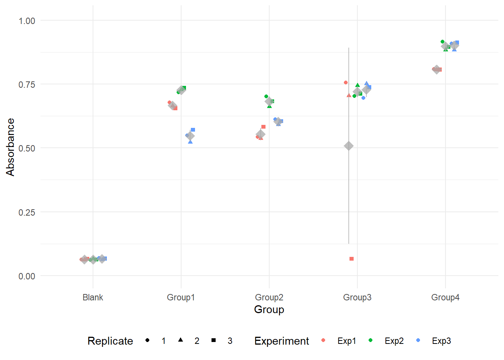
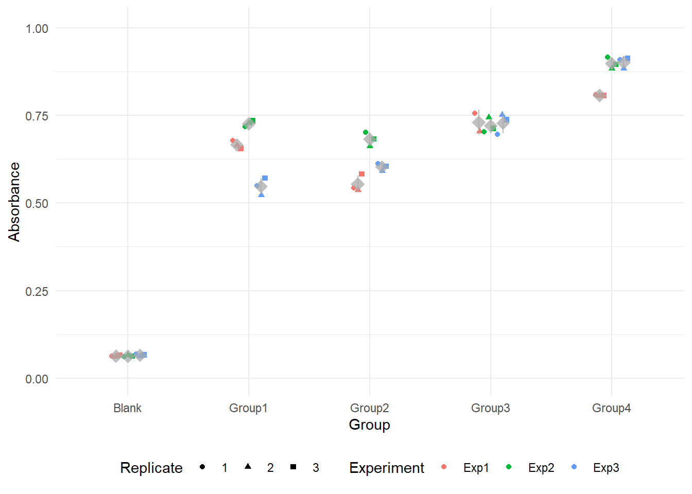
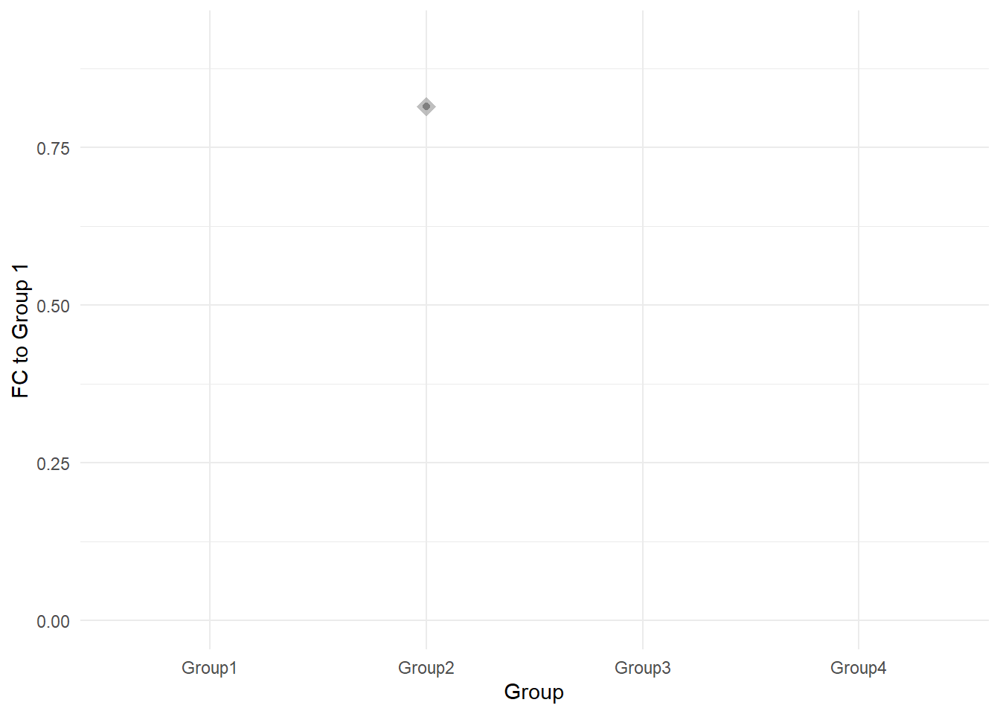
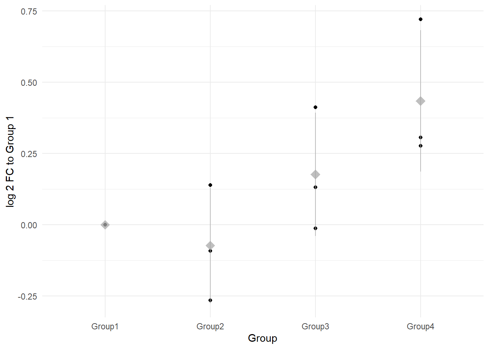
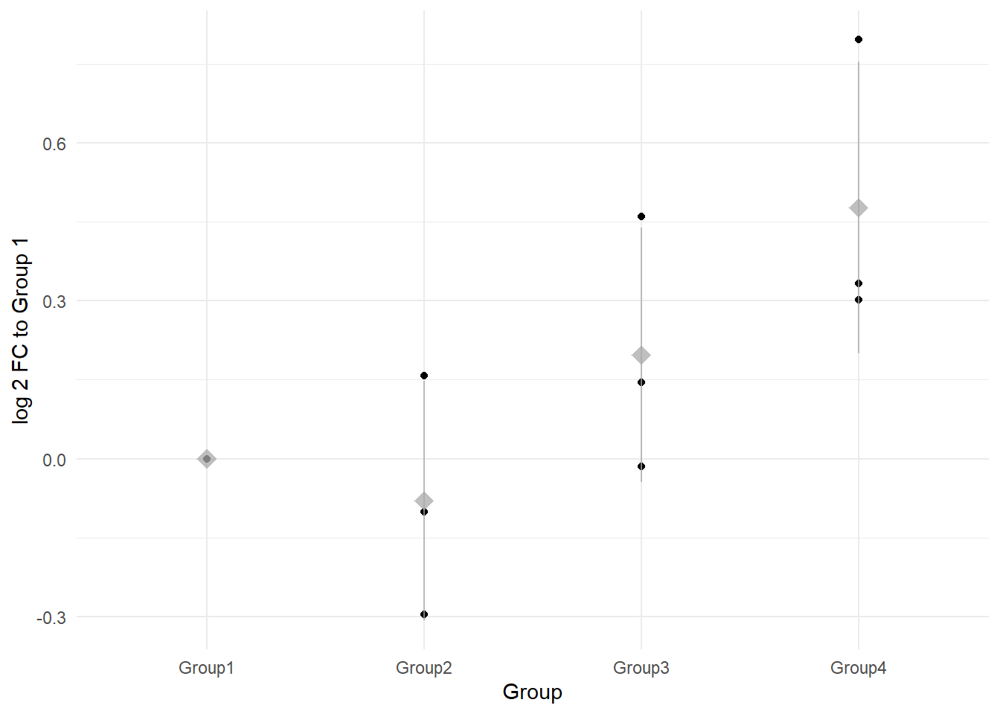

library(tidyverse)Colourimetric Data Analysis
Colourimetric data without a ‘standard curve’
This workflow is for experiments, where we don’t have a ‘standard curve’ or calibration curve, that is a serial dilution of known concentrations. Instead, we rely on relative comparisons between experimental groups.
Setup
First, load the necessary libraries.
1) Raw Data and Quality Control
Load the raw data:
colourimetric_df <- read.csv("example_data/colorimetric_example_tidy.csv")
glimpse(colourimetric_df)Rows: 45
Columns: 4
$ Experiment <chr> "Exp1", "Exp1", "Exp1", "Exp1", "Exp1", "Exp1", "Exp1", "Ex…
$ Group <chr> "Group1", "Group1", "Group1", "Group2", "Group2", "Group2",…
$ Replicate <int> 1, 2, 3, 1, 2, 3, 1, 2, 3, 1, 2, 3, 1, 2, 3, 1, 2, 3, 1, 2,…
$ Absorbance <dbl> 0.6790, 0.6650, 0.6560, 0.5430, 0.5380, 0.5830, 0.7560, 0.7…The example data set are Absorbance values, the raw values from the plate reader. This example dataset contains data for three different experiments, four treatment groups. For each experiment and each group there are three technical replicates (pipetting replicates).
Check for missing values
summary(colourimetric_df) Experiment Group Replicate Absorbance
Length:45 Length:45 Min. :1 Min. :0.0615
Class :character Class :character 1st Qu.:1 1st Qu.:0.5380
Mode :character Mode :character Median :2 Median :0.6790
Mean :2 Mean :0.5694
3rd Qu.:3 3rd Qu.:0.7450
Max. :3 Max. :0.9170 Any missing values should be examined to determine if they result from experimental errors. There are no missing values in the example data.
Visualising Raw Data
To see the distribution of absorbance values across different groups and experiments, plot:
ylimit <- max(colourimetric_df$Absorbance)*1.1 # use the max absorbance value for upper y limit
ggplot(colourimetric_df, aes(x=Group, y=Absorbance, colour=Experiment, shape=as.factor(Replicate))) +
geom_point(position = position_dodge(0.3)) +
stat_summary(aes(group = Experiment),
fun = mean,
fun.min = function(x) mean(x) - sd(x),
fun.max = function(x) mean(x) + sd(x),
geom = "pointrange", size = 1, shape = 18,
colour = 'darkgrey', alpha = 0.75,
position = position_dodge(0.3)) +
labs(color = 'Experiment', shape = 'Replicate') +
scale_y_continuous(limits = c(0, ylimit))+
theme_minimal() +
theme(legend.position = 'bottom')
Graphing one point for each data point, using colours and shapes to distinguish between the experiments and the technical replicates. QC check: data falls within the linear range of the assay (in the example the linear range is between 0.1 and 1).
2) Handling Outliers and Exclusions
In the graph above, we can see that Experiment 1, Group 3, Replicate 3 has an absorbance value similar to the blank readings. We have to determine if this is a real reading or if data collection errors such as pipetting mistakes have occured. In the example, we confirm with our “lab notes” that this well might not have been properly pipetted, and we exclude it:
colourimetric_df <- colourimetric_df %>%
filter(!(Experiment == "Exp1" & Group == "Group3" & Replicate == 3))We replot the data:
ylimit <- max(colourimetric_df$Absorbance)*1.1 # use the max absorbance value for upper y limit
ggplot(colourimetric_df, aes(x=Group, y=Absorbance, colour=Experiment, shape=as.factor(Replicate))) +
geom_point(position = position_dodge(0.3)) +
stat_summary(aes(group = Experiment),
fun = mean,
fun.min = function(x) mean(x) - sd(x),
fun.max = function(x) mean(x) + sd(x),
geom = "pointrange", size = 1, shape = 18,
colour = 'darkgrey', alpha = 0.75,
position = position_dodge(0.3)) +
scale_y_continuous(limits = c(0, ylimit))+
labs(color = 'Experiment', shape = 'Replicate') +
theme_minimal() +
theme(legend.position = 'bottom')
and we see that the exclusion worked as expected. This outlier is removed based on documented lab notes confirming a technical issue. Excluding data without a valid reason is cherry-picking and is not scientifically sound.
3) Background Correction: Subtracting Blank Values
Is it necessary?
It depends.
- If you are interested in absolute absorbance values - yes.
- If there is significant background noise and it is also different between the plates (experiments), it can better to subtract the mean blank value per experiment to correct for plate inconsistencies. However, if you see inconsistencies between plates that you wouldn’t expect, (there is no technical reason for it), you should check your experimental set-up.
- If the blank values are consistently low, there is minimal drift, and you are interested in relative comparisons between groups (or interpolating agains standard curve), subtraction may not be necessary.
For the example, we can try both:
blank_means <- colourimetric_df %>%
filter(Group == "Blank") %>%
group_by(Experiment) %>%
summarise(BlankMean = mean(Absorbance))
colourimetric_df <- colourimetric_df %>%
left_join(blank_means, by = "Experiment") %>%
mutate(Absorbance_Corrected = Absorbance - BlankMean) %>%
filter(Group != "Blank") # Remove blank values now that we have subtracted4) Averaging Technical Replicates
Each experiment contains technical replicates, which we average to obtain a single value per group per experiment. As we try with and without subtracting the blank reading, we average both.
colourimetric_df_meantechnical <- colourimetric_df %>%
group_by(Experiment, Group) %>%
summarise(AbsorbanceMeanCorrected = mean(Absorbance_Corrected),
AbsorbanceSDCorrected = sd(Absorbance_Corrected),
AbsorbanceMean = mean(Absorbance),
AbsorbanceSD = sd(Absorbance)
)`summarise()` has grouped output by 'Experiment'. You can override using the
`.groups` argument.5) Normalisation
To compare across experiments, we normalise all values relative to the control group (Group 1) within each experiment: As we try with and without subtracting the blank reading, we do it for both.
colourimetric_df_Normalised <- colourimetric_df_meantechnical %>%
group_by(Experiment) %>%
mutate(Normalised = AbsorbanceMean / AbsorbanceMean[Group == 'Group1'],
NormalisedCorrected = AbsorbanceMeanCorrected / AbsorbanceMeanCorrected[Group == 'Group1'])6) Summarising across Biological Replicates
To report results, we show the data point for each biological replicate as well as the mean and standard deviation.
ylimit <- max(colourimetric_df_Normalised$AbsorbanceMean)*1.1
ggplot(colourimetric_df_Normalised, aes(x=Group, y=Normalised)) +
geom_point(position = position_dodge(0.3)) +
stat_summary(
fun = mean,
fun.min = function(x) mean(x) - sd(x),
fun.max = function(x) mean(x) + sd(x),
geom = "pointrange", size = 1, shape = 18,
colour = 'darkgrey', alpha = 0.75,
position = position_dodge(0.3)) +
scale_y_continuous(limits = c(0, ylimit))+
labs(y='FC to Group 1')+
theme_minimal() +
theme(legend.position = 'bottom')Warning: Removed 9 rows containing non-finite outside the scale range
(`stat_summary()`).Warning: Removed 9 rows containing missing values or values outside the scale range
(`geom_point()`).Warning: Removed 1 row containing missing values or values outside the scale range
(`geom_segment()`).ylimit <- max(colourimetric_df_Normalised$AbsorbanceMeanCorrected)*1.1
ggplot(colourimetric_df_Normalised, aes(x=Group, y=NormalisedCorrected)) +
geom_point(position = position_dodge(0.3)) +
stat_summary(
fun = mean,
fun.min = function(x) mean(x) - sd(x),
fun.max = function(x) mean(x) + sd(x),
geom = "pointrange", size = 1, shape = 18,
colour = 'darkgrey', alpha = 0.75,
position = position_dodge(0.3)) +
scale_y_continuous(limits = c(0, ylimit))+
labs(y='FC to Group 1')+
theme_minimal() +
theme(legend.position = 'bottom')Warning: Removed 11 rows containing non-finite outside the scale range
(`stat_summary()`).Warning: Removed 11 rows containing missing values or values outside the scale range
(`geom_point()`).Warning: Removed 1 row containing missing values or values outside the scale range
(`geom_segment()`).
The graph above displays the fold change relative to Group 1. Key observations: - Since Group 1 is the normalisation reference for each experiment, the mean value is always 1, and the standard deviation is 0, - When fold changes are less than, a standard y-axis can be misleading. Consider using a log2 transformation for clearer visualisation.
ylimit <- max(colourimetric_df_Normalised$AbsorbanceMean)*1.1
ggplot(colourimetric_df_Normalised, aes(x=Group, y=log2(Normalised))) +
geom_point(position = position_dodge(0.3)) +
stat_summary(
fun = mean,
fun.min = function(x) mean(x) - sd(x),
fun.max = function(x) mean(x) + sd(x),
geom = "pointrange", size = 1, shape = 18,
colour = 'darkgrey', alpha = 0.75,
position = position_dodge(0.3)) +
#scale_y_continuous(limits = c(0, log2(ylimit)))+
labs(y='log 2 FC to Group 1')+
theme_minimal() +
theme(legend.position = 'bottom')
ylimit <- max(colourimetric_df_Normalised$AbsorbanceMeanCorrected)*1.1
ggplot(colourimetric_df_Normalised, aes(x=Group, y=log2(NormalisedCorrected))) +
geom_point(position = position_dodge(0.3)) +
stat_summary(
fun = mean,
fun.min = function(x) mean(x) - sd(x),
fun.max = function(x) mean(x) + sd(x),
geom = "pointrange", size = 1, shape = 18,
colour = 'darkgrey', alpha = 0.75,
position = position_dodge(0.3)) +
#scale_y_continuous(limits = c(0, log2(ylimit)))+
labs(y='log 2 FC to Group 1')+
theme_minimal() +
theme(legend.position = 'bottom')

Subtracting Blank
Let’s look at the values:
colourimetric_df_Normalised %>% group_by(Group) %>%
summarise(FC.mean = mean(Normalised),
FC.sd = sd(Normalised),
FC.blanksubtract.mean = mean(NormalisedCorrected),
FC.blanksubstract.sd = sd(NormalisedCorrected))# A tibble: 4 × 5
Group FC.mean FC.sd FC.blanksubtract.mean FC.blanksubstract.sd
<chr> <dbl> <dbl> <dbl> <dbl>
1 Group1 1 0 1 0
2 Group2 0.957 0.136 0.954 0.152
3 Group3 1.14 0.174 1.16 0.198
4 Group4 1.37 0.245 1.41 0.283Group 1 (reference “control” group):
- Before and after blank subtraction, the mean fold change remains exactly 1, with zero variance.
- This confirms that normalisation was performed correctly.
- Before and after blank subtraction, the mean fold change remains exactly 1, with zero variance.
Groups 2-4:
- The mean fold changes are very similar before and after blank subtraction.
- Standard deviations change slightly.
- The mean fold changes are very similar before and after blank subtraction.
If the blank values were significantly contributing to absorbance variation, we would expect a larger shift in mean values and a reduction in standard deviations after subtraction.
Here, the changes are small, suggesting that the blank readings did not introduce much noise in this example dataset.
Should we subtract the blank?
If blank values are consistent and small, subtraction may not be necessary as it makes little difference.
If blanks show high variability, subtraction is essential to remove systematic errors.
A good approach is to check both to see robustness.
QC checkpoints & Considerations
- Raw data
- Does it fall within expected range of the assay (linear range)?
- Are there outliers? - If yes, deal with them appropriately.
- Is blank subtraction necessary?
- It depends.
- If in doubt, try both.
- Normalisation choice:
- Always normalise to a control that is expected to remain stable.
- Normalisation should reduce systematic technical noise while maintaining the true biological differences between groups.
- Visual Inspection:
- Always plot raw, corrected, and normalized data to catch inconsistencies.